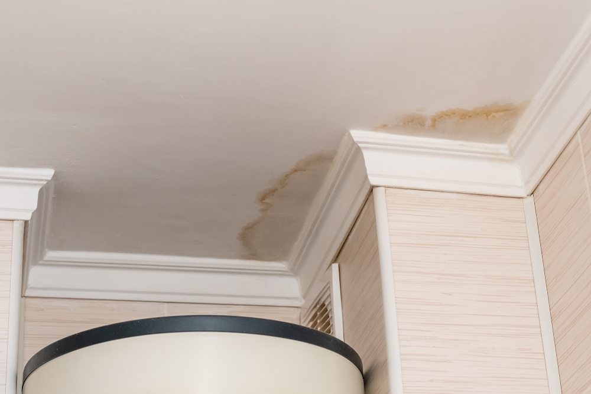
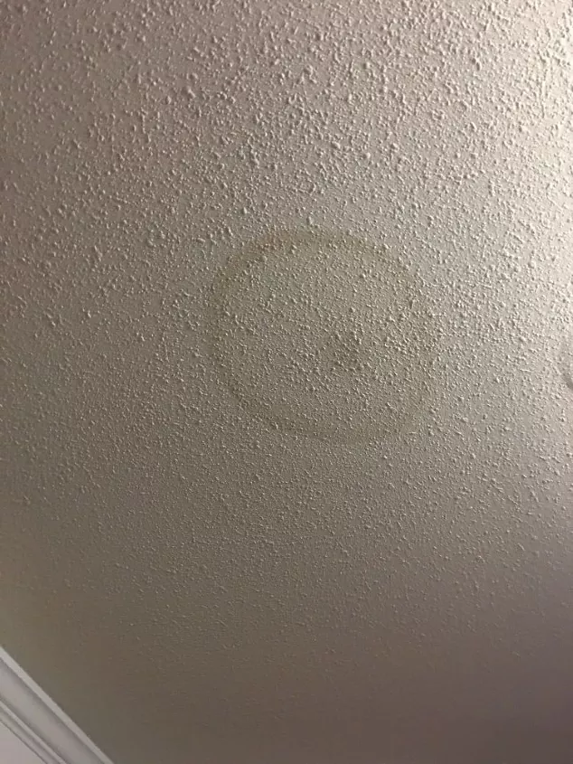
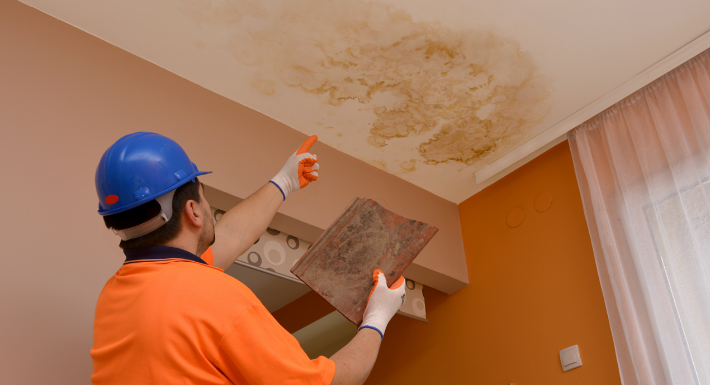

Water Stains on Your Ceiling After a Storm?
Those brown or yellow stains are warning signs your roof was damaged. Get connected with qualified contractors who can assess the damage and work with your insurance.
What Those Stains Mean
Water stains appearing after a storm indicate your roof's protective barrier has been compromised. This could be from:
- Wind-damaged or missing shingles
- Hail impact damage you can't see from the ground
- Damaged flashing around chimneys or vents
- Compromised roof edge or gutters
Time is critical: Storm damage claims have deadlines, and ongoing water exposure causes more damage every day.
What Water Damage Looks Like

Brown Water Stains
Brown or yellow discoloration on ceilings indicates water has penetrated through roof materials and ceiling insulation, often from missing shingles or damaged flashing. Our certified contractors can identify the exact source of these leaks and work with your insurance company to secure maximum coverage for repairs.

Early Stage Discoloration
Gray or dark patches on ceiling paint often appear before visible brown stains, indicating the early stages of water infiltration that requires immediate attention. Catching damage at this stage with our certified contractors can prevent costly structural repairs and ensure your insurance claim covers all necessary work.

Metal Component Rust Stains
Orange or rust-colored streaks usually indicate water is contacting metal roof components or nails, suggesting structural penetration requiring urgent repair. Our experienced contractors know how to document this type of damage to maximize your insurance settlement and prevent further deterioration.
What You Should Do Right Now
Document the damage
Take photos of the water stains and any visible exterior damage
Get professional assessment
A qualified contractor can identify damage you can't see and document it properly
Contact your insurance
Report potential storm damage promptly - delays can affect your claim
Get Connected with Qualified Contractors
We'll connect you with pre-screened contractors who specialize in storm damage and insurance work.
We'll connect you with contractors within 24 hours. No obligation.